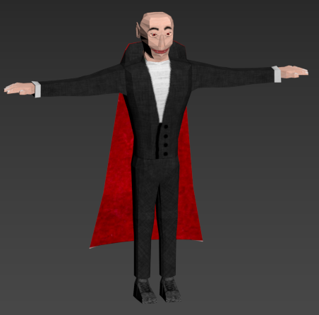
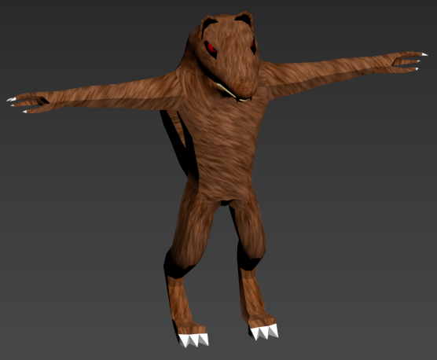
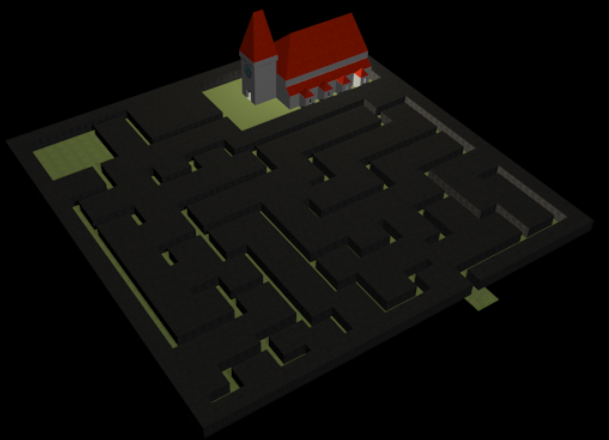
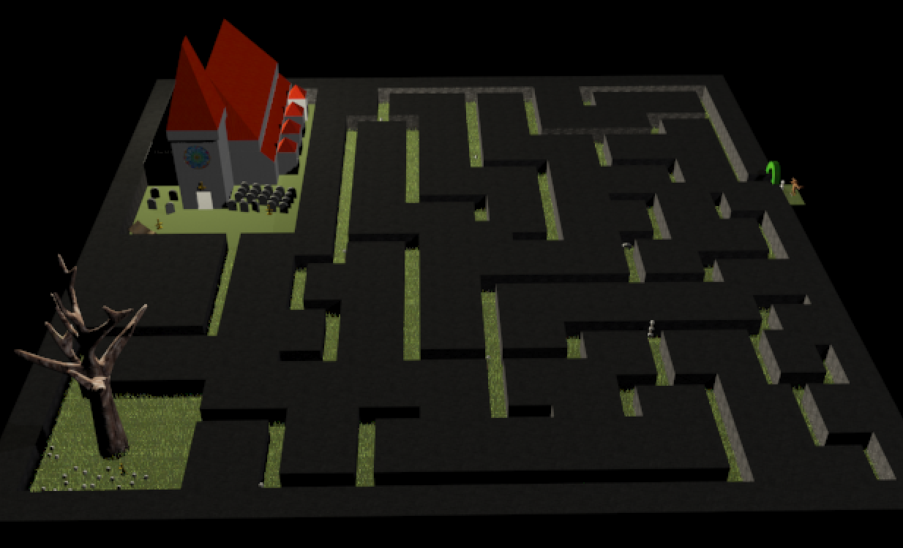

Proyect: The Vampire Hunter
Project proposed in the 1rd year of the
Videogames' Design and Development degree in the URJC
Objective:
Create the concept art of a free concept character and scenario.
The student should be able to use all the programs learned to
create a free concept character and a suitable scenario for it
To create the character the student should draw a turn around and modelate it using 3ds Studio Max
To create the scene, the student should use SketchUp to model it and 3ds Studio Max to add details
Link to the complete PDF in Spanish
VampireHunter pdf
To ask about this project
Email: miniesdax@gmail.com
Drawing the characters


Based on the characters of Warwick from League of Leyends
and Lord Drácula, both characters were drawn in paper
After drawing a Turn Around of both characters, there were
scanned and used as references to 3d box model them
Modelling both characters
 Both characters were modeled in 3ds Max using box modelling.
It is worth to mention that both characters are low poly.
Modelling the scenario
The scene was first modelled in SketchUp
using the concept of a cementery inside a maze
More info in the pdf
Adding details to the scene
The scene was then detailed with lights, 3d models of a tree, benches,
skulls, graves, cameras and lights, a moon and both characters
More info in the pdf
Go back up